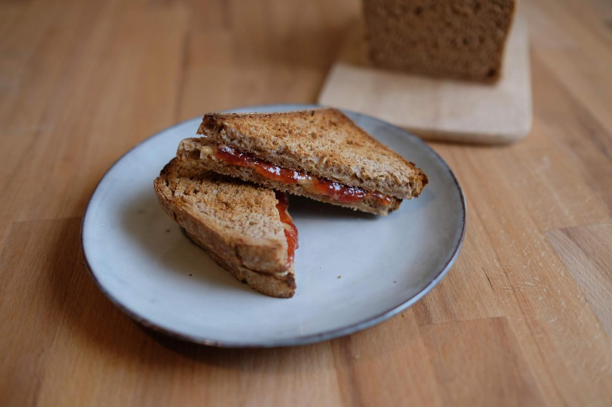

Dinkelvollkorntoastbrot
21.01.2020
Manchmal habe ich Lust auf weiches Brot ohne Kruste, das einfach nur als Unterlage für Erdnussbutter mit Marmelade dient. Allerdings habe ich dann keine Lust, besagtes Brot voller Zusatzstoffe und aus Weißmehl und in der Plastiktüte im Supermarkt zu kaufen; einen kleinen Anspruch habe ich schon. Also musste ein Rezept für ein Vollkorntoastbrot her. Nach ein paar Tests und Missgeschicken bin ich dann auf dieses Rezept gekommen.

Sauerteig
- 15 g Anstellgut, aktiv
- 100 g Dinkelvollkornmehl
- 100 g Wasser
Kochstück
- 35 g Dinkelvollkornmehl
- 135 g Wasser
Hauptteig
- 380 g Dinkelvollkornmehl
- Sauerteig
- Kochstück
- 100 g Wasser
- 10 g Salz
- 30 g Margarine, weich
- 15 g Zucker (1 EL)
- optional: 50 g alter Sauerteig
Zubereitung
- Sauerteigzutaten mischen und 8 Stunden beim Raumtemperatur aufgehen lassen
- Kochstückzutaten in kleinem Topf unter ständigem Rühren zum Kochen bringen und dann in ein kleines Glas füllen, abgedeckt abkühlen lassen
- alle Zutaten außer der Margarine in der Küchenmaschine mit dem Knethaken verkneten, 20 g des Wassers zurückhalten und bei Bedarf dazugeben, eventuell noch ein bisschen mehr
- Margarine in kleinen Portionen nach und nach unterkneten
- den Teig 3 Stunden gehen lassen, dabei während den ersten 2 Stunden 3 mal falten
- eine Kastenform (meine Kastenform ist 22x10x10 cm und hat einen passenden Deckel) fetten und mit einem Streifen Backpapier, der so breit wie die Form ist, auslegen, sodass an den beiden langen Seiten das Backpapier überhängt und die beiden kurzen Seiten frei sind
- eine Arbeitsfläche leicht bemehlen und den Teig auf Arbeitsfläche zu Rechteck ausbreiten. Das Rechteck sollte so breit wie die verwendete Kastenform und etwas länger als breit sein
- den Teig entlang der kürzeren Seite zu einer Rolle rollen, die Rolle sollte dann etwa lang sein wie die Kastenform.
- den Teig vorsichtig mit der Naht nach unten in die Kastenform setzen (oder einfacher: die Rolle auf das Backpapier setzen und das Backpapier dann in die Kastenform setzen)
- mit Wasser besprühen und 1-2 h gehen lassen, währenddessen den Ofen mindestens 30 Minuten auf 250 Grad aufheizen
- abgedeckt bei 250 Grad 20 Minuten mit Deckel, falls vorhanden, backen, dann 40-45 Minuten bei 200 Grad, Deckel bei Bedarf abnehmen (mit Deckel erhält man eine gerade Oberseite, ohne eine gewölbte)
- für ein Toastbrot mit etwas mehr Kruste 10 Minuten vor Backende das Brot aus der Form holen und zurück in den Ofen stellen